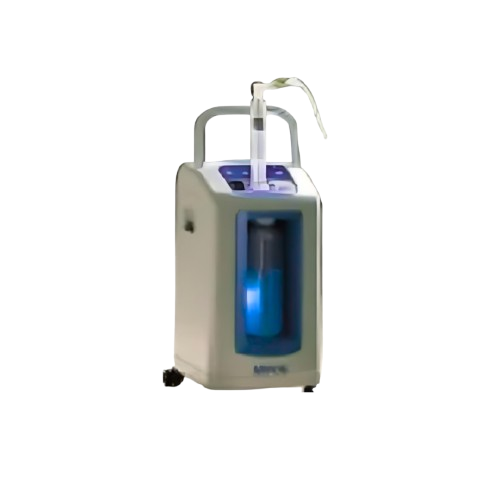
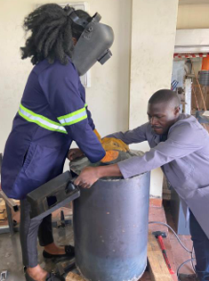

Solving a critical healthcare gap with a scalable technology model
PearlOxy Uganda Limited is a Kampala-based biomedical company building portable oxygen backup technology for the hospitals that need it most.
Oxygen therapy that depends on the grid
Medical oxygen is one of the few treatments with no substitute. For a patient in respiratory distress, an interruption is not an inconvenience. It is a clinical emergency.
In low-resource healthcare settings, a large share of medical oxygen comes from electric concentrators. These machines are affordable, they need no delivery logistics, and they have made oxygen far more available than it once was.
They have one dependency: electricity. When the power goes out in a facility using oxygen concentrators, oxygen flow can stop.
The need for reliable oxygen during power interruptions
Power is not guaranteed
Facilities in low-resource settings work with electricity supplies that are not continuously dependable.
Minutes matter
Patients on continuous oxygen therapy have no buffer of their own when delivery is interrupted.
Cylinders carry a cost burden
The conventional fallback, refillable cylinders, brings recurring costs that strain facility budgets.
MPOS: an oxygen buffer, not a replacement
The MPOS device, or Mobile Portable Oxygen Storage, is designed to work alongside oxygen concentrators rather than replace them.
While power is available, MPOS stores oxygen. When the main power supply is interrupted, it automatically provides that stored oxygen to patients: up to three at once, for up to two hours.
Because it is a one-time purchase, a facility that installs MPOS does not take on a recurring refill contract in exchange for its oxygen security.

Engineered in Kampala, for African health systems
PearlOxy's technology is developed and fabricated locally, by biomedical engineers who work inside the health system the device is built for.
Building locally is not a slogan. It changes what the product can be. Medium pressure cylinders, casings and control assemblies are fabricated and tested in Uganda, which keeps the manufacturing cost at a level facilities can actually meet and keeps the engineering close to the people using it.
It also builds something that outlasts any single device: local capability to design, make and service medical oxygen equipment.




We're not just building a product. We're solving a critical healthcare gap with a scalable technology model.
PearlOxy Uganda LimitedStart in Uganda. Scale across Africa.
PearlOxy's growth plan works outward from the facilities it knows best, through local and regional distributors.
Uganda
Pilot deployments in Ugandan hospitals, targeting 700 health facilities by 31 December 2028.
East Africa
Expansion through regional distribution partnerships across the wider East African market.
Sub-Saharan Africa
A stated addressable market of roughly 100,000 public health facilities across 50 countries.
What we hold ourselves to
Service Above Self
Patient safety and healthcare impact come before everything else we do.
Integrity & Accountability
Transparent operations and honest claims, including about what we have not yet proven.
Innovation & Excellence
Solutions designed for the realities of the health systems they serve.
Get to know the people behind it
PearlOxy is built by biomedical engineers, supported by an independent advisory board.